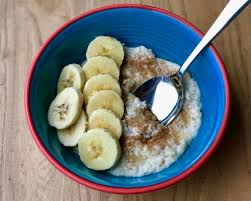

Avena con plátano
Delicioso desayuno
| Avena |
1/2 taza |
| Leche o agua |
1 taza |
| Plátano |
1 unidad |
| Miel o azúcar |
1 cucharadita |
| Canela (opcional) |
Al gusto |
Preparación rápida:
-
Cocina la avena en leche o agua por 5 minutos.
-
Agrega el plátano en rodajas.
-
Endulza con miel o azúcar.
-
Espolvorea canela y sirve caliente.
